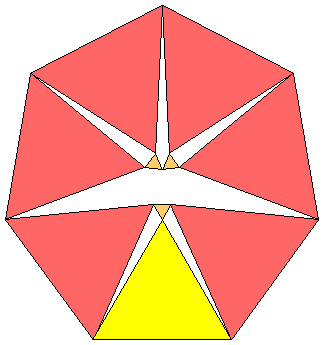

The other known solutions are shown below:
2249002772 + 10364926272 = 1124897100420037858
2249002773 + 10364926273 = 1124897100420037858898449816
2237722202 + 10362004502 =1123785379023930900
2237722203 + 10362004503 =1123785379023930900736173000
421681727112 + 1087027311462 = 13594438548384283562837
421681727113 + 1087027311463 = 1359443854838428356283751827361567
704875606952 + 1117432313772 = 17455045971305066199154
704875606953 + 1117432313773 = 1745504597130506619915466723682008
1182808641702 + 10120437212252 = 1038222856499747505289525
1182808641703 + 10120437212253 = 1038222856499747505289525051686978625
9207263483102 + 10598298250782 = 1970976266597131517562184
9207263483103 + 10598298250783 = 1970976266597131517562184310094565552
The answer is n(n–1)/2. This follows from the result that the expected number of rounds left at any stage is the sum of the pairwise products of the fortunes.
For example, if there are 3 players left with $A, $B, and $C, then there are 6 equally likely outcomes of a player losing $1 to another, and:
| 6(AB+AC+BC – 1) |
= (A+1)(B–1)+(A+1)(C)+(B–1)(C)
| + (A+1)(B)+(A+1)(C–1)+(B)(C–1)
| + (A)(B+1)+(A)(C–1)+(B+1)(C–1)
| + (A)(B–1)+(A)(C+1)+(B–1)(C+1)
| + (A–1)(B+1)+(A–1)(C)+(B+1)(C)
| + (A–1)(B)+(A–1)(C+1)+(B)(C+1)
| |
 |  |
The tournament is as follows: A plays B a best-of-3, C plays D a best-of-3, and then the winners play. If at least one of the earlier best-of-3 matches takes only 2 games for a player to advance, then the winners play a best-of-3, other wise, they play a single game to decide the winner.
The probability that a best-of-3 match only lasts 2 games is (2/3)(2/3)+(1/3)(1/3) = 5/9. And the probability that the winner in this case is the better player is (4/9)/(5/9) = 4/5. This leaves 4/9 for the probability that a best-of-3 match lasts all 3 games, and in this case the probability the winner is the better player is 2/3. The chance that the better player wins a best-of-3 tournament in any way is (2/3)3 + 3(2/3)2(1/3) = 20/27.
So the probability that the best players wins the tournament described is (5/9)(5/9)(4/5)(20/27) + (5/9)(4/9)(4/5)(20/27) + (4/9)(5/9)(2/3)(20/27) + (4/9)(4/9)(2/3)(2/3) = 3536/6561 = 53.9%.
| a) | b)  | c) |
Place coins labeled 1, 2, ..., 17 in one pan and 19, 20,...,25 in the other. The two weights are 153 and 154. Bob knows that 17 coins will weigh at least 153 ounces. The only way to get six coins that weigh more than 153 is to use 19 through 25. These total 154 so the 17 coins weigh 153 and therefore must be 1 through 17. So Bob learns that the missing coin, labeled 18, weighs 18 ounces.
The #2 seed has to beat two lesser teams to be in the finals, and then will face the #1 seed with probability p2 (and win that game with probability 1–p) and a lesser team with probability (1–p2) (and win that game with probability p). Thus the probability that the #2 seed wins the tournament is p2[(p^2 (1–p) + (1–p2) p) ]. By taking a derivative and setting to 0, this is maximized when p=(2+√34)/10 ≈ .783.
Similarly, the probabilities the other seeds win the tournament are:
P(#3 wins)=p (2 p (1–p)) [p2 (1–p) + (1–p2) p], maximized at at p=(1+√17)/8 ≈ .640
P(#4 wins)=p (2 p (1–p)) [p2 (1–p) + 4 p2 (1–p)2 + p (1–p)2], maximized at p ≈ .584
P(#5 wins)=(1–p) [2 p (1–p)) (p2 (1–p) + 4 p2) (1–p)2 + p (1–p)2]
P(#6 wins)=(1–p) [2 p (1–p)) (p (1–p)2 + (1–(1–p)2) (1–p)]
P(#7 wins)=(1–p)2 [p (1–p)2 + (1–(1–p)2) (1–p)]
P(#8 wins)=(1–p)3, all of which are maximized at the endpoint p=1/2.
The best strategy is to put aside 5-of-a-kind or a full house (obviously), and if that is not possible put aside 2 pair, and if that is not possible put aside 1 pair, and if that is not possible put aside nothing. In particular, you should never put aside 3-of-a-kind or 4-of-a-kind.
The expected waiting time for a geometric random variable is the reciprocal of the success probability. This means the expected waiting time from 2 pair is 1/(2/6)=3 and the waiting time from either 3-of-a-kind or 4-of-a-kind is 1/(1/6)=6.
When 1 pair is set aside, of the 216 rolls, 1 leads to 5-of-a-kind, 20 lead to a full house, 60 lead to 2 pair, and the rest give no progress, so the expected value E solves the equation
A similar calculation shows the expected waiting time E at the beginning of the game solves the equation
The best strategy is to pick door #2 (or by symmetry, door #5). If you are shown donkeys behind doors #3 and #4, you switch to door #5. If you are shown donkeys behind doors #5 and #6, you switch to door #4. If you are shown donkeys behind doors #4 and #5, you switch your pick to door #3 (or door #6).
Here are the possible initial choices of door, placements of the car and which doors might be shown to you. To make the numbers nice, we assume there are 72 trials of each.
PICK DOOR #1 INITIALLY 2&3 3&4 4&5 5&6 car 1 3 3 3 3 car 2 4 4 4 car 3 6 6 car 4 6 6 car 5 6 6 car 6 4 4 4 PICK DOOR #2 INITIALLY 3&4 4&5 5&6 car 1 4 4 4 car 2 4 4 4 car 3 6 6 car 4 12 car 5 12 car 6 6 6 PICK DOOR #3 INITIALLY 1&2 4&5 5&6 car 1 6 6 car 2 6 6 car 3 4 4 4 car 4 6 6 car 5 12 car 6 6 6The column sums in the tables are the proportions that you are shown those pairs of donkeys. The row of the largest entry in each column indicates your best strategy for switching. This explain the switching strategy given above. And we have:
confirming that door #2 is the best initial pick.